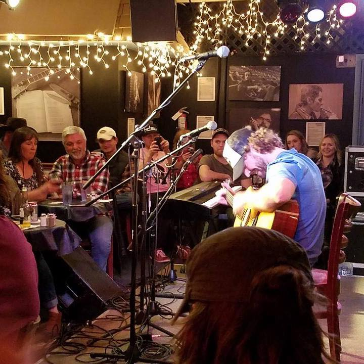

Nick Black
I'm Nick Black, a software developer and former musician. I work full-time in Charlotte, NC and play music on the side.
If I'm not working, I'm hanging out with my wife and our incredible animals.
I've been interested in computers since I was a child. It all started with a leftover Tandy from my mom's research/dissertation days in a small room that housed the air conditioning ductwork.
A state away, my father's bookshelves created a wall of programming and math texts. Growing up looking at these titles, I became curious to learn more about their content.
I tried my hand at college but did not finish. I got close before my pop passed away but it didn't seem as important after that. I studied Computer Science while there.
It has been interesting to watch the terrain of learning shift. Now there are online educators and an abundance of YouTube videos. One of my favorites is Brad Traversy. He is a down to earth person with a gift for explaining complicated concepts and keeping it fun.
Currently I have been concentrating heavily on developing myself in this great field.
